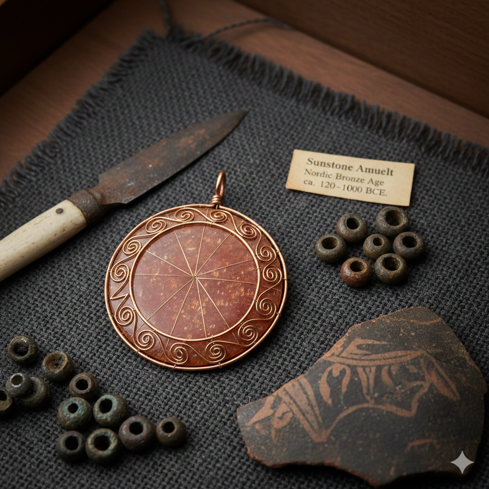

Welcome to the AI-Curated Museum
Explore a unique digital exhibition where artifacts from archaeology and anthropology have been interpreted and presented through AI under human curation. Click on Collections to view artifacts and learn their histories.
Featured Artifact: Sunstone Amulet
This Bronze Age amulet demonstrates early Nordic reverence for the sun. Discover more by visiting our Collections page.
Explore Collections